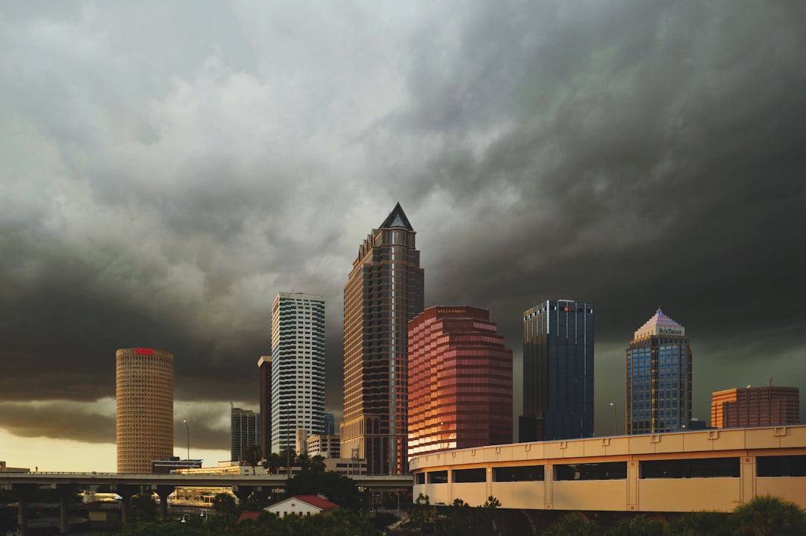

Start with what is visible, where water is entering, and what the roof assembly may hide. A useful Tampa roofing decision compares repair, inspection and replacement findings before a commitment. Ask for DBPR verification, permit responsibility in writing, and a line-by-line estimate covering materials, deck allowances, flashing, ventilation, cleanup, exclusions and warranty conditions. Submission of an enquiry does not confirm availability, timing, price, inspection or acceptance of work.
For Tampa property owners comparing roof repair tampa options, the useful starting point is not a product choice but a clear written record of condition, access and water entry.
Roof Repair Tampa Explained
Roof Contractor Tampa frames the decision around visible condition, property details and water-entry evidence before choosing repair or replacement. That is a useful discipline for Tampa owners because a ceiling mark, displaced shingle or aged roof surface can point to different scopes once coverings, flashing, valleys and penetrations are checked.
The first conversation should describe what the roof is doing. Note the covering if known, the approximate age, when the issue began, whether water is entering, previous repairs, access constraints and nearby structures. Safe photos can be provided later if a provider asks for them. The goal is to help a future inspection test a likely water path, not to diagnose the roof remotely.
Use this separate Tampa roof repair guide as a companion checklist when you want a second plain-English pass over repair questions before requesting a written scope.
Repair, Inspection Or Replacement
Repair is usually the narrower question: what defect is visible, what area is affected, and what exclusions remain after the work is defined. Inspection is the evidence step. It should record what can be observed, what remains hidden, and why repair, replacement or further investigation is recommended. Replacement is the broadest scope because the quote should treat the roof as an assembly.
For replacement comparisons, ask each provider to identify tear-off assumptions, deck allowance, underlayment, ventilation, flashing, permits, cleanup and warranty conditions. A quote that only names a roof covering leaves too much untested. Asphalt shingles, metal roofing and tile roofing can each be part of a sound scope, but the visible material is only one layer of the decision.
- Repair: ask for the affected area, likely water path and limits of the fix.
- Inspection: ask what was observed and what could not be confirmed.
- Replacement: ask how layers, allowances, inspections and cleanup are handled.
Permit And License Questions
The source guidance tells owners to verify the contracting business through Florida DBPR before signing. It also says permit responsibility should be confirmed in writing, because property jurisdiction and work scope determine the permit and inspection route. For a Tampa property, those two checks should happen before a deposit, schedule or material order is treated as settled.
Keep the question practical. Ask which contracting business accepts the work, what license details should be checked, who is responsible for the roofing permit, and what inspection steps are expected for the proposed scope. If a provider says no permit is needed, ask them to put the reason in the written estimate so you can compare it against another scope without relying on memory.
Historic district and HOA checks can also affect what an owner needs to confirm before work begins. Do not assume the same answer applies across every property. The useful version of the question is tied to the address, the roof covering, the work scope and the authority that will inspect or approve the work.
Line-By-Line Estimate Review
A written roofing estimate should let you compare the same job, not three different interpretations of a vague roof problem. Put the property facts and symptoms in the enquiry first, then ask each provider to respond with the materials, layers, flashing details, ventilation approach, deck allowance, cleanup duties and exclusions. That makes repair versus replacement findings easier to compare.
Cleanup deserves a line of its own. The source page specifically calls out cleanup as part of the replacement comparison, and reference topics include a magnetic nail sweep as a useful detail. Ask whether debris removal and nail collection are included, where materials will be staged, and how access around nearby structures will be managed.
Warranty language should also match the real scope. A headline warranty on a roof covering does not explain fasteners, penetrations, edges, underlayment or hidden deck conditions. Ask which parts of the assembly are covered, which conditions void or limit coverage, and which exclusions stay with the owner after the job.
Who This Applies To
This guide is for Tampa owners who are deciding what to do after seeing water entry, a visible roof defect, storm-related concerns, or an ageing roof that may be near replacement. It also suits owners comparing asphalt shingle, metal or tile proposals where the quoted roof covering is clear but the supporting layers are not yet easy to compare.
It is less useful for emergency diagnosis, insurance decisions or any situation where a person needs immediate site-specific advice. The source page separates condition evidence from insurance decisions and makes clear that submitting an enquiry does not confirm availability, timing, price, inspection or acceptance of work. Treat the written scope as the decision document, and treat the enquiry as a way to organise facts before a provider evaluates the property.
- Document symptoms. Write down the covering if known, approximate age, visible issue, when it began and whether water is entering.
- Ask for findings. Request observed findings and the reason repair, replacement or further investigation is recommended.
- Verify the business. Check the contracting business through Florida DBPR before signing.
- Compare the scope. Review materials, layers, deck allowance, flashing, ventilation, cleanup, exclusions and warranty conditions line by line.
- Confirm permits. Get permit responsibility and the expected inspection route in writing for the property and work scope.
| Decision point | Repair scope | Replacement scope |
|---|---|---|
| Starting evidence | Visible defect, likely water path and affected area | Overall roof condition, layers and assembly condition |
| Key quote details | Repair area, exclusions and remaining uncertainty | Tear-off, deck allowance, underlayment, flashing, ventilation and cleanup |
| Permit question | Ask whether the work scope requires a permit | Confirm permit responsibility and inspection route in writing |
| Best use | Localised issue where findings support a limited fix | Widespread condition, ageing roof or findings that support full replacement |
Common questions
Should a Tampa owner repair or replace after a leak? The source guidance says the answer depends on where the damage is, how widespread it is, the roof covering, and the condition of the deck, flashing and underlayment. Ask for inspection findings and both viable scopes in writing when the decision is not obvious.
What should be included in a written roofing estimate? A useful estimate should identify materials, layers, deck allowance, flashing, ventilation, cleanup, exclusions and warranty conditions. Comparing those items line by line is more useful than comparing roof covering names alone.
Who should confirm roofing permit responsibility? The provider and owner should confirm it in writing before work is accepted. The source page says property jurisdiction and work scope determine the permit and inspection route.
Does sending an enquiry confirm the job will happen? No. The source page states that submitting the form does not confirm availability, timing, price, inspection or acceptance of the work.
This guide covers practical Tampa roof repair, inspection, replacement, permit and written-scope questions grounded in the supplied source page.